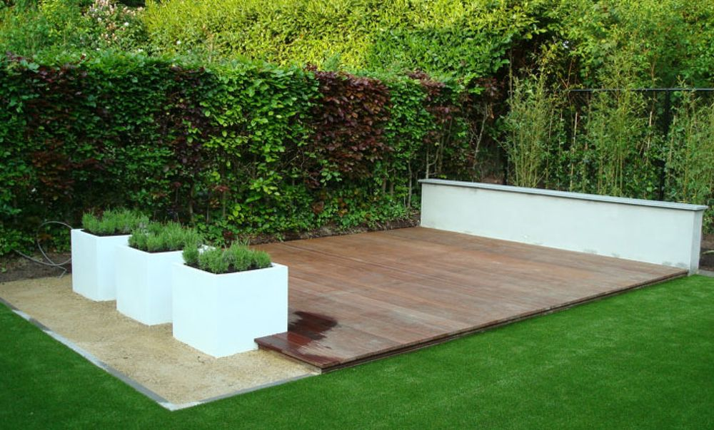
Tuinontwerp
Een origineel ontwerp dat past bij u en uw woning. Met voorbeelden en materialen om uit te kiezen.
Op maat van uw woningMeer info
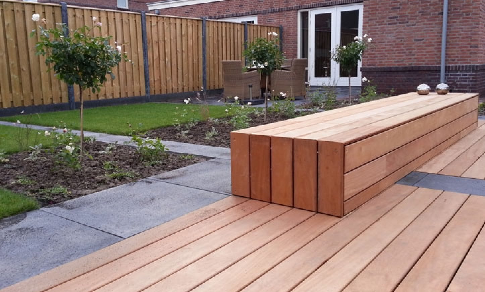
Hovenier uit Prinsenbeek voor ontwerp, aanleg en onderhoud, voor particulieren en bedrijven. Met oog voor kwaliteit, liefde voor het vak en aandacht voor u.
Offerte was duidelijk en de prijs viel mee, hij heeft alles gedaan zelf hebben wij niets hoeven doenAstrid Versluis via Google · 4,8 gemiddeld
Van een eerste ontwerp tot de laatste plant. U heeft één aanspreekpunt voor de hele tuin.

Een origineel ontwerp dat past bij u en uw woning. Met voorbeelden en materialen om uit te kiezen.
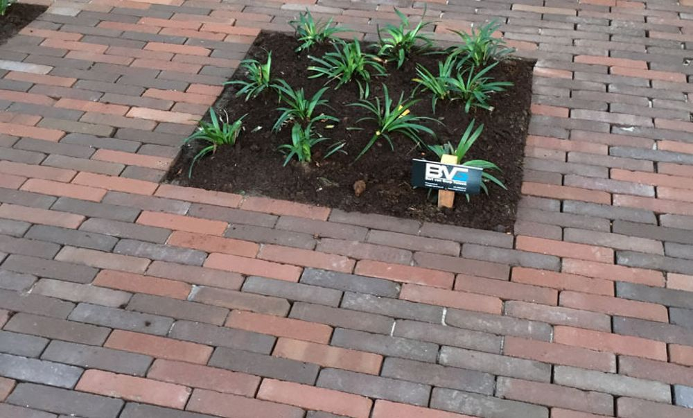
Oprit, terras of pad. Van eenvoudige tegels tot gebakken klinkers en natuursteen.
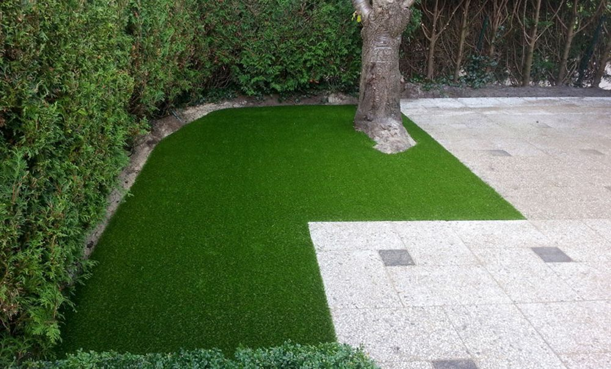
Kunstgras dat niet van echt te onderscheiden is, of juist een nieuw gazon.
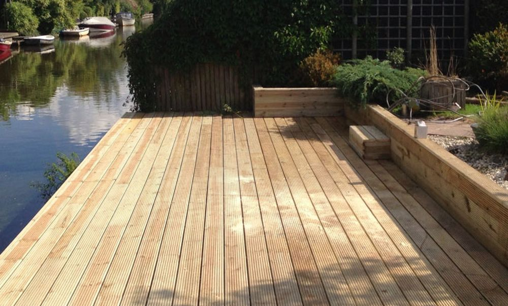
Een houten terras als natuurlijke vloer in de tuin. Stevig gebouwd, zonder kromme planken.
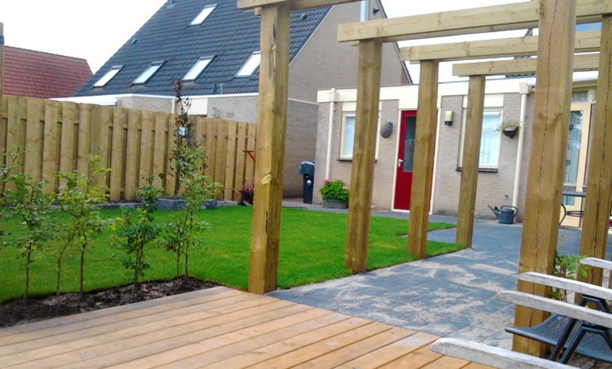
Langer buiten zitten, ook als het regent. Vast of tijdelijk, met of zonder klimplanten.
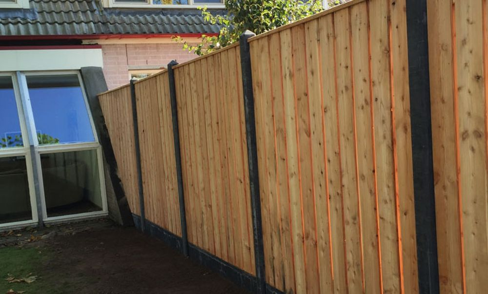
Meer privacy of een gezellig hoekje. Met een haag, klimplanten of een houten schutting.
Ook voor: natuurlijke (zwem)vijvers, tuinverlichting en elektra, tuinmeubelen en tuinbeveiliging.
Uw buitenterrein is uw visitekaartje. We leggen bedrijfstuinen, opritten en parkeerterreinen aan zonder onnodige hinder voor uw medewerkers en bezoekers.
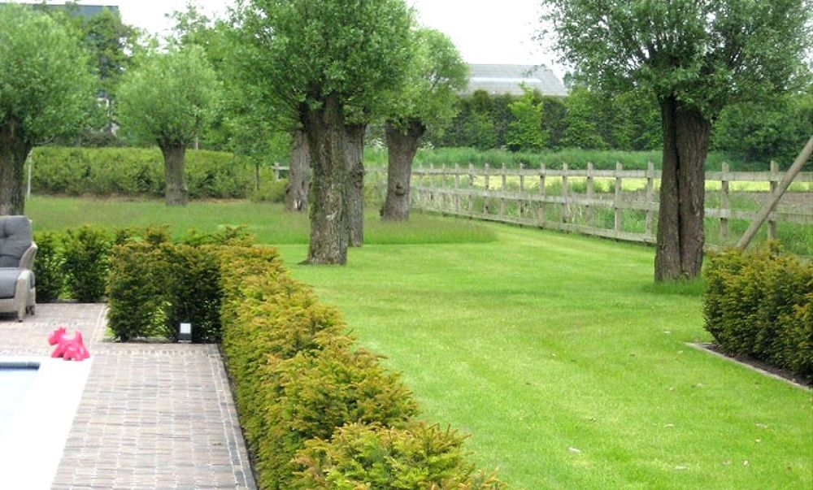
Een tuin in topconditie houden vraagt tijd, kennis en groene vingers. Met een onderhoudsabonnement komen we periodiek langs voor het werk dat we samen afspreken. Zo is uw tuin vier seizoenen lang een plaatje.
Terrassen, paden, vlonders en complete tuinen in Prinsenbeek en omgeving.
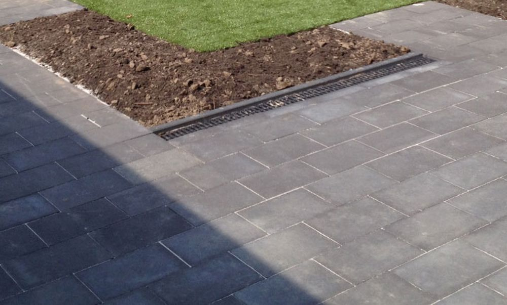
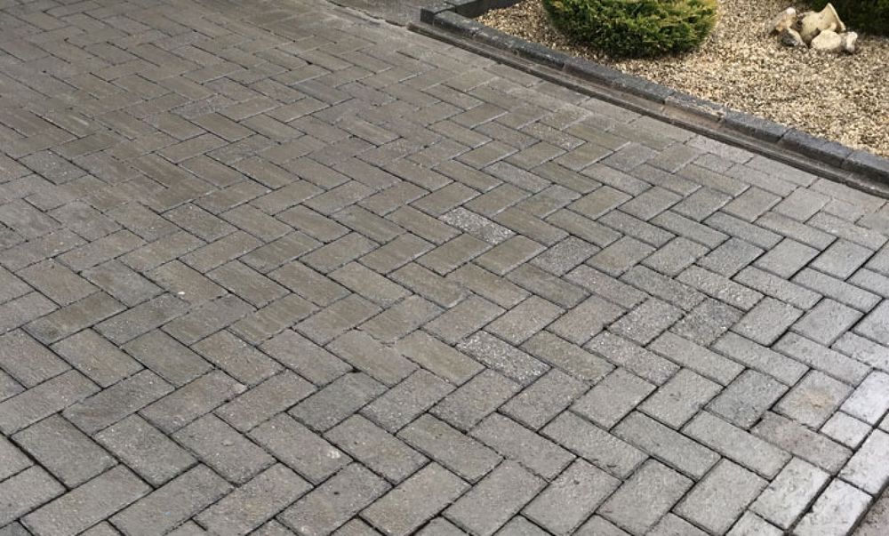
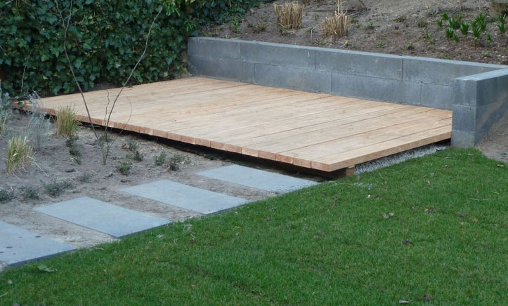
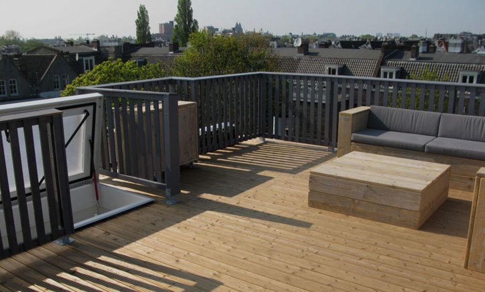
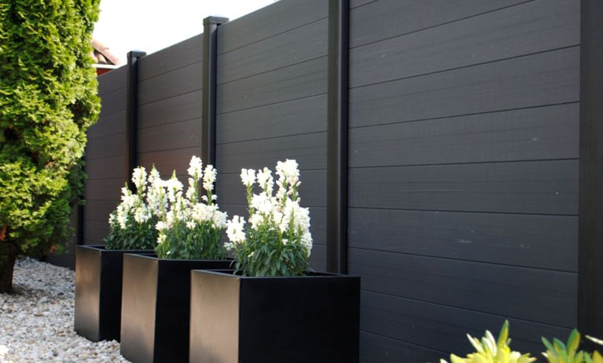
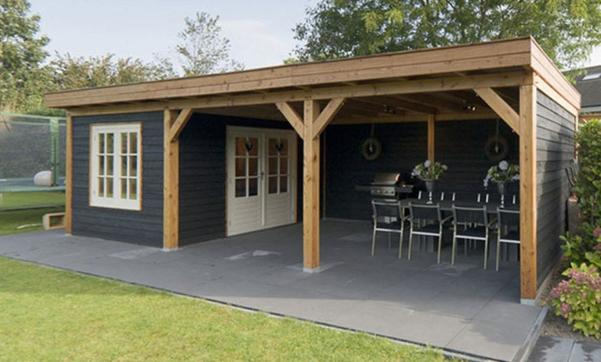
Geheel vrijblijvend. We proeven de sfeer, bekijken de huidige situatie en luisteren naar uw wensen.
Een ontwerp dat past bij u en uw woning, met een duidelijke offerte en heldere afspraken over start en duur.
Netjes opgeruimd opgeleverd. Slaat een plant toch niet aan? Dan zorgen we meteen voor een vervanger.
Bart gaf goed advies heeft de tuinontwerp heel goed uitgevoerd
Offerte was duidelijk en de prijs viel mee, hij heeft alles gedaan zelf hebben wij niets hoeven doen
Bart heeft heel goed gewerkt en is een prettig persoon om mee om te gaan
Bart heeft de wildernis bij mij in de achtertuin omgetoverd tot het mooiste horecaterras van Prinsenbeek. Bart werkt hard en nauwkeurig en laat aan het eind van de dag alles schoon achter, brengt ideeën in waar je zelf als leek niet aan denkt en het eindresultaat mag er zijn.
Bart heeft voor mij naar volle tevredenheid een nieuw gazon aangelegd. Offerte kwam snel en was duidelijk. De klus zelf ging volgens een duidelijk plan en een goed tempo. Al het afval werd meegenomen.
Buurvrouw Sylvia en wij zijn erg tevreden met de mooie schutting die je hebt gemaakt & geplaatst. Goed en secuur werk heb je geleverd.
Bart is een prima tuinman. Werkt snel, schoon en secuur. Ik ben heel tevreden hoe hij mijn tuin heeft achtergelaten. Draagt ook veel verschillende en goede ideeën aan, denkt aan persoonlijke situatie.
Wij zijn heel erg tevreden over Bart. Hij heeft echt super goed werk geleverd.
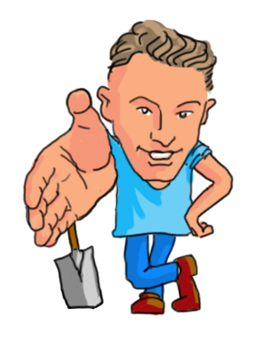
“Een jong bedrijf, maar wel met oog voor ‘ouderwetse’ waarden.”
BVG Tuinen is het hoveniersbedrijf van Bart van Gurp uit Prinsenbeek. Kwaliteit, liefde voor het vak en aandacht voor u als opdrachtgever staan voorop. Tegelijk volgen we nieuwe materialen, technieken en trends op de voet.
Slimme technieken en materialen maken ons werk eenvoudiger, daardoor kunnen we concurrerende tarieven rekenen. En we hebben oog voor duurzaamheid, in de keus van materialen en in hoe we ontwerpen en aanleggen.
Benieuwd welke ideeën we hebben voor uw tuin? We komen graag vrijblijvend bij u langs.
Bel of app Bart, dan plannen we direct een moment.